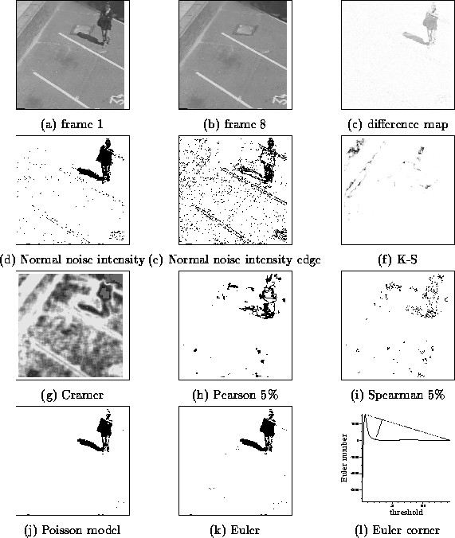

Due to its simplicity image differencing is a popular method for change detection. It only requires calculating the absolute values of the difference between the corresponding pixels in two images, and large values in the difference map then indicate locations of change.
The difference map is usually binarised by thresholding it at some pre-determined value to obtain a change/no-change classification. However, the threshold value is critical, since too low a value will swamp the difference map with spurious changes, while too high a value will suppress significant changes. The proper value of the threshold is dependent on the scene, illumination, etc. and should be calculated dynamically.
Several general approaches are possible for determining thresholds for change detection. First the signal, noise, or both can be modelled. Second, either their intensity and/or spatial properties can be modelled. Here we will just describe the two spatial methods listed in the bottom row.
| noise | signal | |
|---|---|---|
| intensity | Normal model | intensity distributions |
| spatial | Poisson model | stable number of regions |
If we assume that the noise is white then its spatial distribution over the image will be random. To quantify the randomness we will make the assumption that the observations follow a Poisson distribution. This can be tested using the relative variance Vr = s2 / x. It is calculated by first counting the number of observations (in our case the number of above threshold pixels in the difference map) in n windows, {xi }i=1...n, from which the mean x, and variance s2, of the xi can be found. Although the test is sensitive to the window size and point density it works adequately as long as x is sufficiently large.
For our purposes we do not wish to detect the spatially random noise, but rather to avoid it in our thresholded image. We therefore select the threshold which maximises the relative variance, thereby maximising "clumpiness" (regions of change) and minimising the Poisson distribution (noise).
The location, size, and number of the regions of change are generally unknown. However, we might expect that these properties will remain fairly stable over a wide range of threshold values, whereas down at the noise level small changes in the threshold value can substantially alter the number of regions. Such an observation suggests that if a range of threshold values is found that leads to a stable number of regions, then these regions are unlikely to come from noise, and so a value from this range will provide a suitable threshold. Rather than counting the number of regions the image's Euler number can be used, and gives almost identical results and can be computed more efficiently.
A stable threshold range will correspond to a plateau in the graph of the Euler numbers against thresholds. However, given the noisy, fragmented nature of images it is more to model the shape of the graph as a decaying exponential. Therefore a suitable partition point between the signal and noise is the "corner" of the curve. which we find as the point on the curve with maximum deviation from the straight line drawn between the end points of the curve.
Results are shown using methods based on: the Poisson distribution, the stable Euler number, the Normal noise intensity model, the Normal noise intensity model applied to the difference image constructed from two frames after running the Sobel edge detector, the Kolmogorov-Smirnov and Cramér-von Mises tests, Pearson's rank correlation coefficient, Spearman's rank correlation,
Both of the spatial methods (the Poisson noise model
and the stable Euler number) generally performed best.

Figure 1: Pedestrian crossing car park
More details of thresholding algorithms I have developed are given in
the following papers:
You can download code to implement change detection.
return to Paul Rosin's homepage